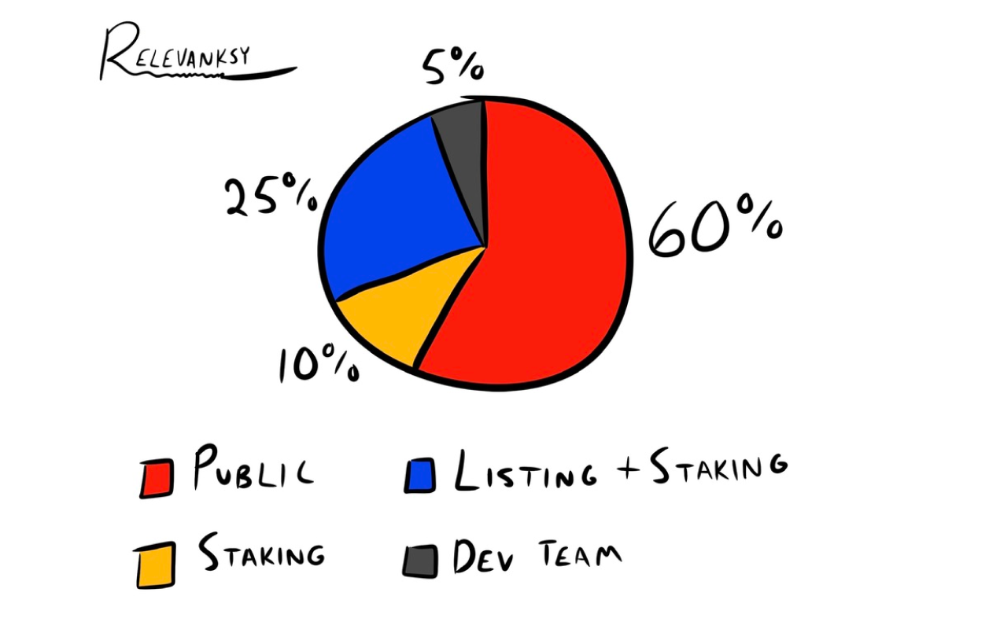
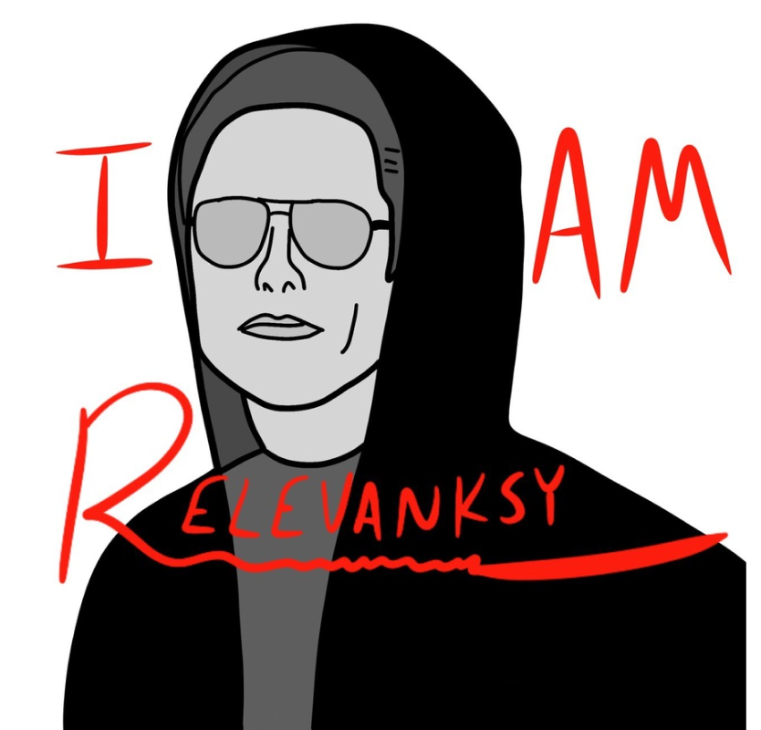
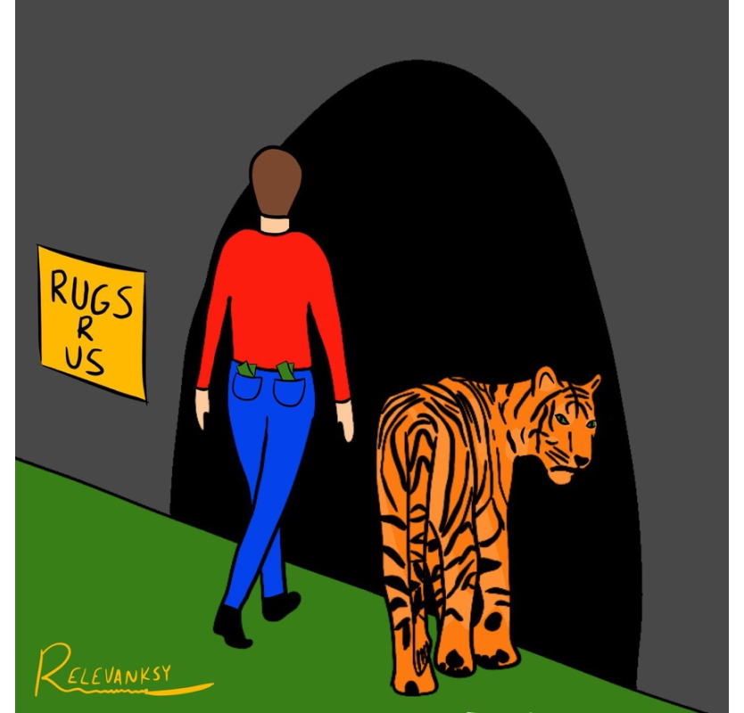
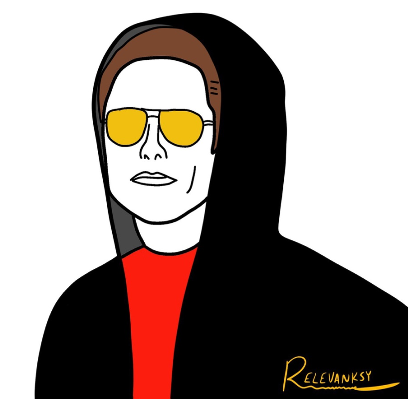

who is relevanksy?
this question has no simple answer, and it is sparking conversation in many circles around
the world, whether it be the billionaires in Elon Musk’s inner circle, the degens of the crypto
community, or the art gallery owners in Paris and New York City.
what we do know is that relevanksy has arrived, and he’s working on building a new vision for artists in the crypto space. a vision where they’re able to release their art to the world in an entirely new and more intimate way. and he’s going to be utilizing this platform to launch his first series of culturally relevant, satirical, and rare NFTs: the relevanksy collection
it’s time to do something different.
what we do know is that relevanksy has arrived, and he’s working on building a new vision for artists in the crypto space. a vision where they’re able to release their art to the world in an entirely new and more intimate way. and he’s going to be utilizing this platform to launch his first series of culturally relevant, satirical, and rare NFTs: the relevanksy collection
it’s time to do something different.
token
the core token of the relevanksy dApp is $RSY, and the relevanksy collection will be the first
NFT collection offered via the app.
the relevanksy dApp aims to provide a new experience for artists looking to drop an expanding collection of rare, one-off NFTs. artists will have the opportunity to set up raffles for their NFT projects, where raffle tickets can be purchased with $RSY for an opportunity to win exclusive rights to mint the new NFT.
the pilot program for the relevanksy app will be the relevanksy collection, a series that aims to provide social commentary, satirical memes, and a historical timeline of crypto and world events as seen from the eyes of relevanksy himself.
the relevanksy dApp aims to provide a new experience for artists looking to drop an expanding collection of rare, one-off NFTs. artists will have the opportunity to set up raffles for their NFT projects, where raffle tickets can be purchased with $RSY for an opportunity to win exclusive rights to mint the new NFT.
the pilot program for the relevanksy app will be the relevanksy collection, a series that aims to provide social commentary, satirical memes, and a historical timeline of crypto and world events as seen from the eyes of relevanksy himself.
tokenomics

$RSY has a unique and dynamic set of tokenomics. the buy and sell taxes are independently
adjustable, but cannot exceed 12 percent. the breakdown of this 12 percent for both buy and sell at launch
is as follows:
2% dev (which can never exceed 2%)
5% marketing
5% liquidity
the dynamic and adjustable buy and sell tax will allow for many unique use cases, like focusing on the liquidity pool when building the floor, or focusing on marketing in times of volatility, or special promotions like a 0% buy tax happy hour.
the long term vision for this project is to turn the buy and sell taxes down to 0%, and to allow for the revenue from the platform to sustain the funding for the project.
2% dev (which can never exceed 2%)
5% marketing
5% liquidity
the dynamic and adjustable buy and sell tax will allow for many unique use cases, like focusing on the liquidity pool when building the floor, or focusing on marketing in times of volatility, or special promotions like a 0% buy tax happy hour.
the long term vision for this project is to turn the buy and sell taxes down to 0%, and to allow for the revenue from the platform to sustain the funding for the project.
collection



the relevanksy collection is an NFT collection that’s designed to provide relevant,
light-hearted, and satirical commentary on the state of the crypto market, geopolitical events, metas and
memes in the BSC space, etc.
this collection will launch via the relevanksy platform, a dApp where creators can raffle their content in exchange for $RSY tokens, while investors can enter to win an opportunity for an exclusive and rare NFT. relevanksy’s goal is to launch a new NFT every 2-3 days, in a limited run of 5-10 total NFTs per release, building to a complete collection of 1,000 NFTs that represent a window of time in the world of DeFi, viewed from the lens of of the mysterious relevanksy.
this collection will launch via the relevanksy platform, a dApp where creators can raffle their content in exchange for $RSY tokens, while investors can enter to win an opportunity for an exclusive and rare NFT. relevanksy’s goal is to launch a new NFT every 2-3 days, in a limited run of 5-10 total NFTs per release, building to a complete collection of 1,000 NFTs that represent a window of time in the world of DeFi, viewed from the lens of of the mysterious relevanksy.
roadmap
TBD
socials